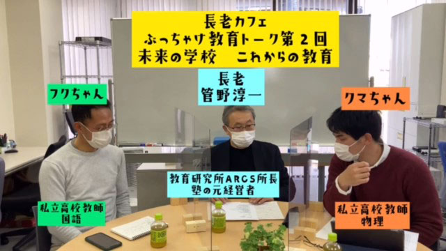

というわけで―どういうわけ⁉―動画の第2回をアップしました。
何しろ慣れない素人の技。
音声がイマイチ、画像もあまり鮮明じゃない…など色々の声が寄せられました。
特に第1回目を見た人からは「テロップを入れろ！」という声が多く、しかし私も先生方も忙しく編集の仕方もよく分からない。
そこで仕方なく大学生の息子に急遽テロップを入れる作業を頼んだ次第。
ということで今回（第2回）は一応画面にテロップを入れてみましたがどうでしょう。まあ少しは見やすくなったのかなとは思いますが…。
今回も前回同様「打合せなしのブッツケ」のわりには面白い内容かなと自分的には思いますが、私が妙にイバッてる感じが…少しウザい(笑)かも。
興味ある方は是非ご覧いただけると嬉しいです。
大学入試はなぜ変わるの？
ところで今は受験シーズン真最中。
今年はコロナ禍で受験生も親も例年になく苦労しているようです。
大学受験でいうなら今年からはセンター入試に代わって「共通テスト」が導入されました。
マァ制度はこれまでも何度も変遷を重ねてきたので、私などは「また変わったかァ」という程度ですが、受験生にとっては対策などに頭を悩ませたかも知れません。
で、なぜ大学入試はよく変わるかというと社会的要請のせいなんですね。要するに社会の求める人材は時代ごと変わる。だからそれに合わせた人材が受かりやすい入試制度に変えるということ。
たとえば、上からの命令に疑問ももたず黙々と従う人間が必要な時代は暗記中心、知識つめこみ型の問題が幅をきかせ、独創性や発想の豊かさが必要な時代は論述中心に変わるといった具合です。
そう考えると、先に言った社会的要請といってもあくまで経済的側面の色合いが濃いと気づきます。国民の豊かさ、国力というものをもっぱら経済成長のレベルで測る考え方です。
だから社会の要請というよりズバリ言うなら経済界の要請なんですね。
最近は日本の経済成長はとても鈍く、国際的競争力もドンドン弱くなっている。これに対し画期的なヒット商品や斬新なアイディアをもつ人材がいないのは、教育が悪いからだと叫ぶ財界人が多い。
しかしこれはよく考えるとおかしい！
そもそも高度成長期時、規格大量生産の時代でモノさえつくれば飛ぶように売れたときは、画一的に「言われたことだけ聞く人間」を奨励していたのは、その経済人だったではないですか。
人間が平和で心豊かに暮らすには経済的豊かさだけが条件でしょうか。
政府や財界という権力機構が、国力を相も変わらず経済レベルだけで測り大学入試のあり方を左右することに私はかねがね苦い思いを抱いてきました。
その都度ふりまわされるのは受験生であり、制度が変わるたびにカリキュラムや授業法を押しつけられる学校の先生方であり、塾や予備校であり、子どもたちの親であり、つまり国民全体なのです。
とマァ、今回は少し熱くなりましたが（汗）もちろん大学入試制度の変更は悪いことだけではありません。
記述論述が増え、たった一つの正解を求めるあり方から多様な問題提起を促す方向への転換は、確かに「覚えるだけの勉強」から真に「考えを深める」学習姿勢を促すでしょう。
だから私たちは権力機構の思惑がどうあれ、学ぶことを通じて自分の能力をしっかり伸ばすことに専念できる時代になった！と喜べばよいのです。
今や学校を始めとする教育機関も、かつてのように目先の点数ばかり追わせ型通りのパターンの詰め込みから脱出しつつあります。
集団的画一性から個人的能力の時代へ。
そんな新しい時代の予感を覚えます。